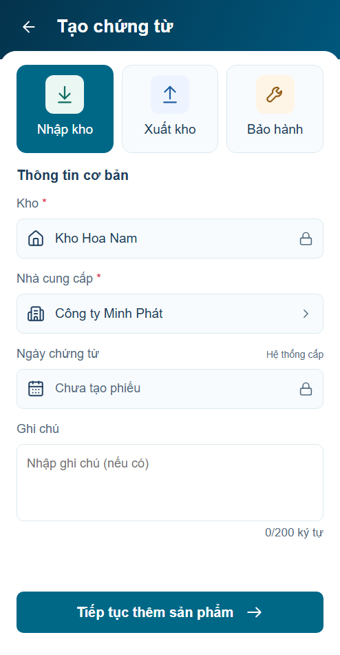
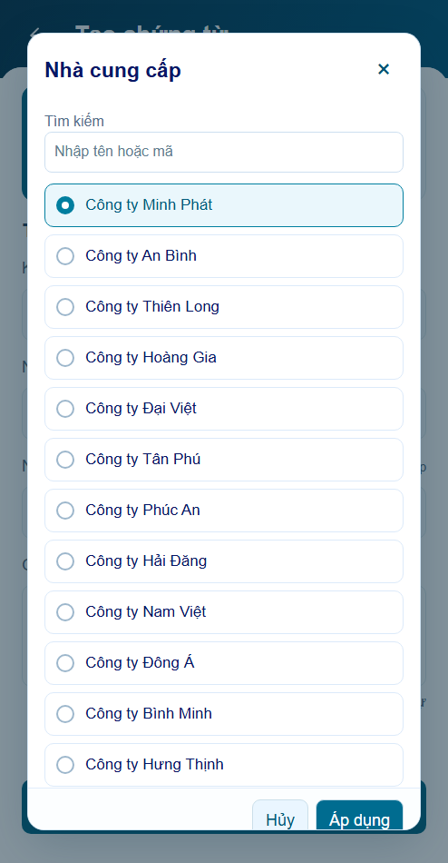
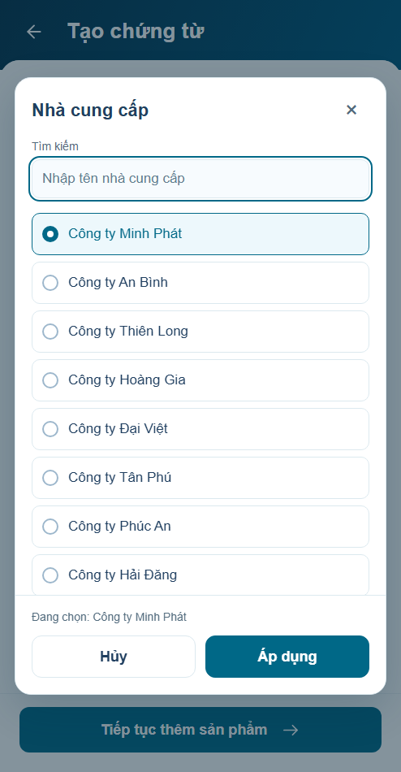
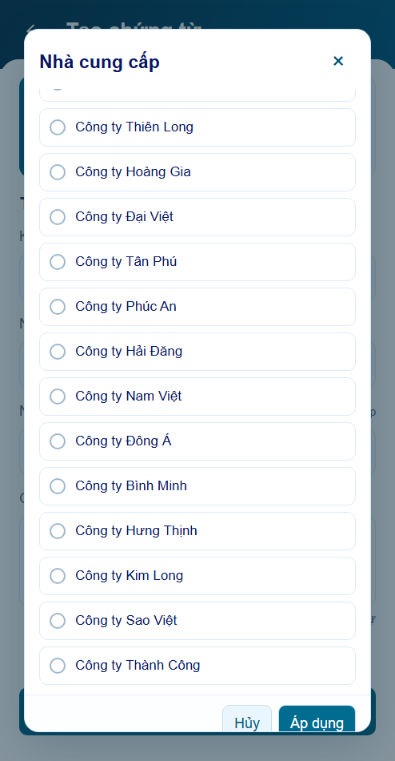

Form tạo


Đề xuất đã triển khai để review. Ảnh actual cùng Chromium,494×950,DPR1. Visual chưa được nghiệm thu.
Tile nghiệp vụ nhẹ hơn; kho/ngày là metadata; nhà cung cấp và ghi chú là vùng nhập. Dialog sửa ràng buộc chiều cao, search/footer cố định, chỉ danh sách cuộn.



